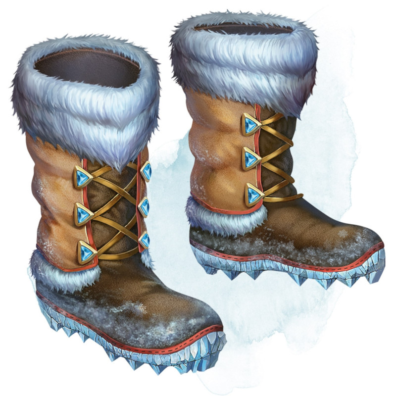

Boots of the Winterlands
Wondrous item, uncommon (requires attunement)
These furred boots are snug and feel quite warm. While you wear them, you gain the following benefits:
• You have resistance to cold damage.
• You ignore difficult terrain created by ice or snow.
• You can tolerate temperatures as low as -50 degrees Fahrenheit without any additional protection. If you wear heavy clothes, you can tolerate temperatures as low as -100 degrees Fahrenheit.
• You have resistance to cold damage.
• You ignore difficult terrain created by ice or snow.
• You can tolerate temperatures as low as -50 degrees Fahrenheit without any additional protection. If you wear heavy clothes, you can tolerate temperatures as low as -100 degrees Fahrenheit.
Dungeon Master´s Guide (SRD)
